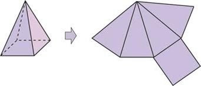
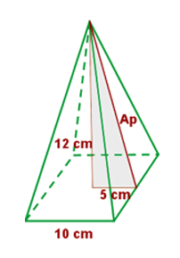
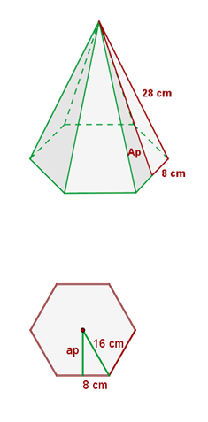
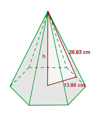

Cuerpos geométricos
pirámides
Una pirámide es un poliedro limitado por una base y cuyas caras laterales son triángulos con un vértice común, vértice de la pirámide.
La altura de una pirámide es la distancia entre el vértice y el plano que contiene a la base.
Una pirámide es regular cuando la base es regular y el vértice se proyecta en el centro de la base.
En una pirámide regular todas las aristas laterales tienen la misma longitud y todas las caras laterales son triángulos isósceles iguales. La altura de estos triángulos se llama apotema de la pirámide.
Desarrollo de una pirámide recta y su área

El área de una pirámide es la suma de las áreas de todas sus caras.
Ejercicios
1.- Calcula el área total de una pirámide cuadrada cuyo lado de la base mide 10 cm y cuya altura es 12 cm.

2.- Calcula el área total de una pirámide hexagonal cuyo lado de la base mide 16 cm y sus aristas laterales miden 28 cm.

Soluciones: 1) 360 cm2; 2) 1953,12 cm2
Obra publicada con Licencia Creative Commons Reconocimiento No comercial Compartir igual 4.0